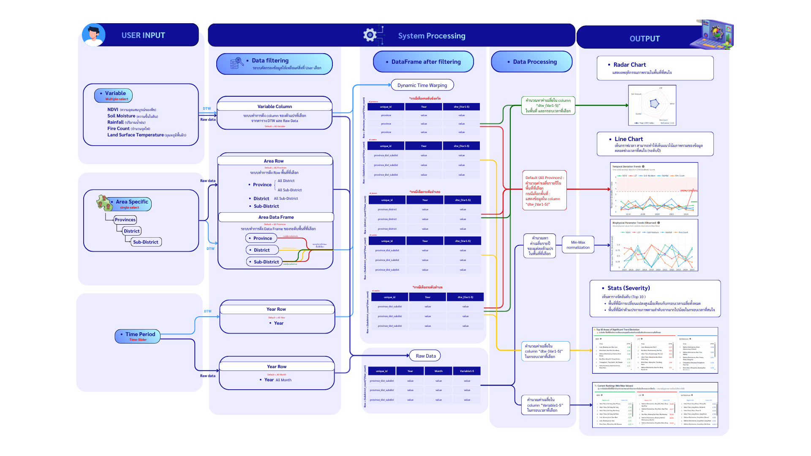
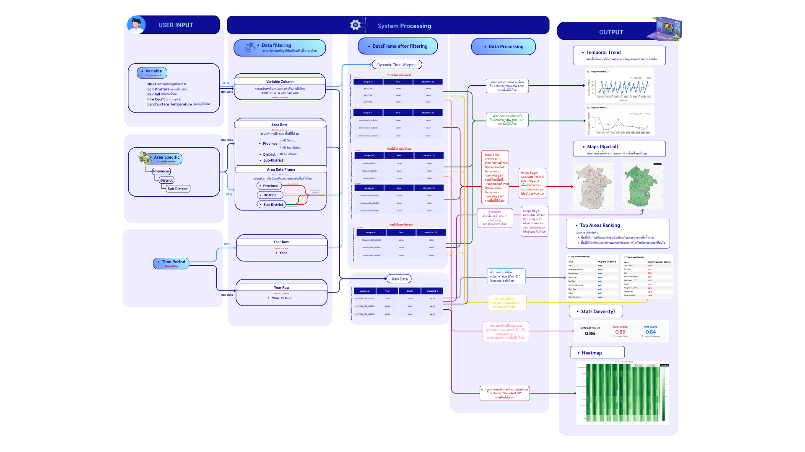

Northeastern Thailand is a region highly vulnerable to natural disasters, particularly drought, which severely affects the economy and the quality of life of local communities. The impacts are especially pronounced in the agricultural sector, which relies heavily on rainfall. Khon Kaen Province and its surrounding areas represent a strategically important region in Northeastern Thailand in terms of economic activities, transportation networks, and agricultural production. Moreover, the physical and environmental characteristics of this area—such as extensive agricultural land, rainfed farming systems, and frequent drought occurrences—closely reflect the overall conditions of the region, making it an appropriate representative area for spatial drought assessment and analysis.
Traditionally, drought monitoring in Thailand has relied primarily on ground-based observation stations, including rainfall, temperature, soil properties, and humidity measurements. However, such approaches are constrained by limited spatial coverage, low temporal resolution, and high resource requirements. In contrast, remote sensing technology, in combination with Geographic Information Systems (GIS), offers significant advantages for large-scale and continuous environmental monitoring. Satellite-derived indicators such as the Normalized Difference Vegetation Index (NDVI), Land Surface Temperature (LST), soil moisture, rainfall, and fire occurrence provide valuable insights into drought conditions and vegetation health across broad spatial and temporal scales.
Despite the high accuracy of remote sensing data, their technical complexity often limits their direct application in policy-level decision-making. To address this challenge, this study aims to integrate remote sensing and GIS techniques to develop a web-based Decision Support System (DSS) for monitoring drought conditions and assessing vegetation health at the sub-district level. The system analyzes key environmental variables, including soil moisture, NDVI, LST, fire count, and rainfall, and presents the results through interactive dashboards and spatial visualizations.
The proposed system is designed to enhance data accessibility and interpretability for policymakers and relevant stakeholders, thereby supporting informed decision-making in drought management, water resource planning, and disaster mitigation. Ultimately, this research contributes to the development of an efficient, accurate, and sustainable spatial information platform for environmental monitoring and disaster risk management in Northeastern Thailand.
Our system monitors five critical remote sensing indices to analyze drought patterns and vegetation health comprehensively.
Quantifies vegetation health and density by measuring the difference between near-infrared (which vegetation strongly reflects) and red light (which vegetation absorbs).
Measures the temperature of the Earth's skin. High LST often correlates with drought conditions and water stress in vegetation.
Estimates the water content in the soil, a direct indicator of agricultural drought and essential for crop growth monitoring.
Tracks precipitation levels to identify meteorological drought and assess water supply for the region.
Monitors active fires and thermal anomalies, which are often indicators of extreme dryness and agricultural burning.

Figure 1: Integrated Analysis Dashboard — simultaneous multi-variable monitoring and comparison.

Figure 2: Spatial Map Explorer — focused single-variable spatial analysis.